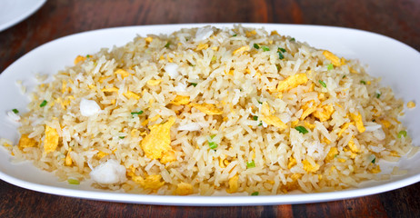

Crab Fried Rice
Home

Description
A recipe for crab fried rice, consisting of crab meat,
green onions, egg, and white rice.
Ingredients
- 1 1/3 cups water
- 2/3 cup uncooked long grain white rice
- 3 tablespoons vegetable oil
- 2 medium onions, cut into wedges
- 3 cloves garlic, chopped
- 2 teaspoons salt
- 1 1/2 teaspoons white sugar
- 1 large egg, beaten
- 1/4 pound cooked crab meat
- 3 green onions, chopped
- 1 tablespoon chopped cilantro
- 1/2 cucumber, sliced (garnish)
- 1 lime, sliced (garnish)
Steps